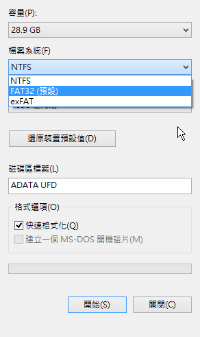
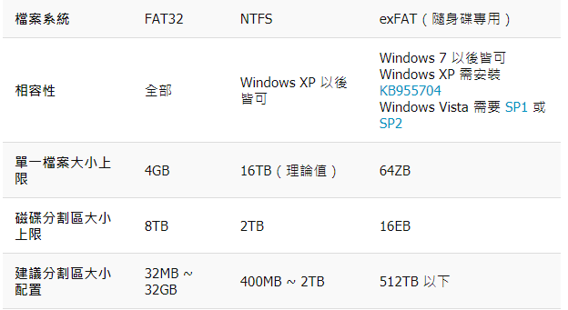

Proxy 設定 <<
Previous Next >> GitHub 倉儲建立
隨身碟格式化
格式化是指對磁碟或磁碟中的分割區（partition）進行初始化的一種操作，這種操作通常會導致現有的磁碟或分割區中所有的檔案被清除。
在Windows環境下，格式化的操作相對簡單。
通常的操作步驟是：先開啟「電腦」，接著在希望被執行格式化的碟符圖示上右擊，然後選擇「格式化」，再按照提示操作即可。需要注意的是：對硬碟執行格式化操作時，使用者需要擁有系統管理員權限（僅限於Windows Vista以及此後推出的作業系統。）
在Windows環境中，除了可以使用圖形化的操作介面執行格式化操作之外，也可以在命令提示字元中使用Diskpart指令(僅限於Windows 2000 及以後的作業系統，包含Windows PE)進行操作。

這裡比較 NTFS、FAT32 與 exFAT 這些 Windows 常用的檔案系統，讓您更容易選擇適合自己的檔案系統。
顯示「檔案太大無法放置在目的檔案系統」，如果您確定您的硬碟還有足夠的空間，但是卻出現這樣的訊息，就表示問題可能出在檔案系統上，以下是 Windows 系統上常用的檔案系統比較，每一種檔案系統都有它的限制，例如 FAT32 的檔案大小就不能超過 4GB
如果一開始沒有注意到，等到硬碟放了很多東西之後，要再重新格式化就很累了。因為現在的硬碟容量都非常大，如果是 Windows 個人電腦的內接式硬碟，可以直接選擇 NTFS，而如果是隨身碟或外接式硬碟，則可以考慮使用 exFAT，以現在新的硬碟來說，通常都不適合再使用舊的 FAT32 了

Proxy 設定 <<
Previous Next >> GitHub 倉儲建立